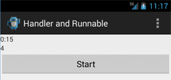

/* Моя кошка замечательно разбирается в программировании. Стоит мне объяснить проблему ей - и все становится ясно. */
John Robbins, Debugging Applications, Microsoft Press, 2000

/* Моя кошка замечательно разбирается в программировании. Стоит мне объяснить проблему ей - и все становится ясно. */
John Robbins, Debugging Applications, Microsoft Press, 2000
Потоки позволяют выполнять несколько задач одновременно, не мешая друг другу, что даёт возможность эффективно использовать системные ресурсы. Потоки используются в тех случаях, когда одно долгоиграющее действие не должно мешать другим действиям. Например, у нас есть музыкальный проигрыватель с кнопками воспроизведения и паузы. Если вы нажимаете кнопку воспроизведения и у вас запускается музыкальный файл в отдельном потоке, то вы не можете нажать на кнопку паузы, пока файл не воспроизведётся полностью. С помощью потоков вы можете обойти данное ограничение.
Чтобы быть уверенным, что ваше приложение не теряет отзывчивости, хорошим решением станет перемещение всех медленных, трудоёмких операций из главного потока приложения в дочерний.
Применение фоновых потоков — необходимое условие, если вы хотите избежать появления диалогового окна для принудительного закрытия приложения. Когда активность в Android на протяжении 5 секунд не отвечает на события пользовательского ввода (например, нажатие кнопки) или приёмник широковещательных намерений не завершает работу обработчика onReceive() в течение 10 секунд, считается, что приложение зависло. Подобные ситуации следует избегать любой ценой. Используйте фоновые потоки для всех трудоёмких операций, включая работу с файлами, сетевые запросы, транзакции в базах данных и сложные вычисления.
Android предоставляет несколько механизмов перемещения функциональности в фоновый режим.
Класс AsyncTask позволяет определить операции, которые будут выполняться в фоне, вы также будете иметь доступ к обработчику событий, что позволит отслеживать прогресс выполнения задач и выводить результаты в контексте главного графического потока. Подробнее об этом классе в отдельной статье.
Хотя использование AsyncTask — хорошее решение, случается, что для работы в фоновом режиме приходится создавать собственные потоки и управлять ими.
В Java есть стандартный класс Thread, который вы можете использовать следующим образом:
new Thread(new Runnable() {
public void run() {
//do time consuming operations
});
}
}).start();
Данный способ подходит только для операций, связанных с временем. Но вы не сможете обновлять графический интерфейс программы.
Если вам нужно обновлять интерфейс программы, то нужно использовать AsyncTask, о котором говорилось выше, или вы можете реализовать ваш собственный класс, наследованный от Thread, используя объект Handler из пакета android.os для синхронизации с потоком GUI перед обновлением пользовательского интерфейса.
Вы можете создавать дочерние потоки и управлять ими с помощью класса Handler, а также классов, доступных в пространстве имён java.lang.Thread. Ниже показан простой каркас для переноса операций в дочерний поток.
// Этот метод вызывается из главного потока GUI.
private void mainProcessing() {
// Здесь трудоемкие задачи переносятся в дочерний поток.
Thread thread = new Thread(null, doBackgroundThreadProcessing,
"Background");
thread.start();
}
// Объект Runnable, который запускает метод для выполнения задач
// в фоновом режиме.
private Runnable doBackgroundThreadProcessing = new Runnable() {
public void run() {
backgroundThreadProcessing();
}
};
// Метод, который выполняет какие-то действия в фоновом режиме.
private void backgroundThreadProcessing() {
[ ... Трудоемкие операции ... ]
}
Предположим, мы разрабатываем собственный проигрыватель. У нас есть кнопка Play, которая вызывает метод play() для воспроизведения музыки:
Button playButton = (Button) findViewById(R.id.play);
playButton.setOnClickListener(new View.OnClickListener()) {
public void onClick(View v) {
play(); // вызываем воспроизведение
}
}
Теперь запустим метод в другом потоке. Сначала создаётся новый поток. Далее описывается объект Runnable в конструкторе потока. А внутри созданного потока вызываем наш метод play(). И, наконец, запускаем поток.
Thread myThread = new Thread( // создаём новый поток
new Runnable() { // описываем объект Runnable в конструкторе
public void run() {
play(); // вызываем метод воспроизведения
}
}
);
Иногда требуется временно приостановить поток ("усыпить"):
// засыпаем на 2 секунды (в миллисекундах)
myThread.sleep(2000);
Для установки приоритета процесса используется метод setPriority(), который вызывается до запуска потока. Значение приоритета может варьироваться от Thread.MIN_PRIORITY (1) до Thread.MAX_PRIORITY (10):
myThread.setPriority(10);
myThread.start();
У потока есть метод stop(), но использовать его не рекомендуется, поскольку он оставляет приложение в неопределённом состоянии. Обычно используют такой подход:
if (myThread != null) {
Thread dummy = myThread;
myThread = null;
dummy.interrupt();
}
Существует и другой способ, когда все запускаемые потоки объявляются демонами. В этом случае все запущенные потоки будут автоматически завершены при завершении основного потока приложения:
myThread.setDaemon(true);
myThread.start();
При сложных вычислениях может понадобиться очередь Runnable-объектов. Помещая объект в очередь, вы можете задать время его запуска. Для демонстрации использования обработчика потока напишем приложение, запускающую фоновый процесс, который будет каждые 200 мс получать текущее время и обновлять текст. Нам понадобится кнопка Пуск, которая будет отображать количество нажатий и две текстовые метки, в которых будет отображаться время и количество нажатий кнопки:
package ru.alexanderklimov.test;
import android.app.Activity;
import android.os.Bundle;
import android.os.Handler;
import android.os.SystemClock;
import android.view.Menu;
import android.view.View;
import android.widget.TextView;
public class MainActivity extends Activity {
// считаем нажатия кнопки
private int buttonPressed = 0;
// счетчик времени
private long sTime = 0L;
private TextView tvCounter;
private TextView tvTime;
// обработчик потока - обновляет сведения о времени
private Handler mHandler = new Handler();
@Override
protected void onCreate(Bundle savedInstanceState) {
super.onCreate(savedInstanceState);
setContentView(R.layout.activity_main);
if (sTime == 0L) {
sTime = SystemClock.uptimeMillis();
mHandler.removeCallbacks(TimeUpdater);
// Добавляем Runnable-объект TimeUpdater в очередь
// сообщений, объект должен быть запущен после задержки в 100 мс
mHandler.postDelayed(TimeUpdater, 100);
}
tvTime = (TextView) findViewById(R.id.textViewTime);
tvCounter = (TextView) findViewById(R.id.textViewCounter);
}
// Описание Runnable-объекта
private Runnable TimeUpdater = new Runnable() {
public void run() {
// вычисляем время
final long start = sTime;
long millis = SystemClock.uptimeMillis() - start;
int second = (int) (millis / 1000);
int min = second / 60;
second = second % 60;
// выводим время
tvTime.setText("" + min + ":" + String.format("%02d", second));
// задержка в 200 мс
mHandler.postDelayed(this, 200);
}
};
@Override
protected void onPause() {
// Удаляем Runnable-объект
mHandler.removeCallbacks(TimeUpdater);
super.onPause();
}
@Override
protected void onResume() {
super.onResume();
// Добавляем Runnable-объект
mHandler.postDelayed(TimeUpdater, 100);
}
public void onClick(View v) {
tvCounter.setText("" + ++buttonPressed);
}
}
На экране будет отображаться время и одновременно мы можем нажимать на кнопку. Эти действия не мешают друг другу, так как работают в разных потоках.

Кроме метода postDelayed() вы можете использовать метод postAtTime():
postAtTime(Runnable r, long uptimeMillis)
В этом случае объект r добавляется в очередь сообщений, запуск объекта производится во время, заданное вторым параметром.
Самый простой способ помещения объекта в очередь - метод post(), когда указывается только помещаемый объект без указания времени выполнения объекта:
post(Runnable r)